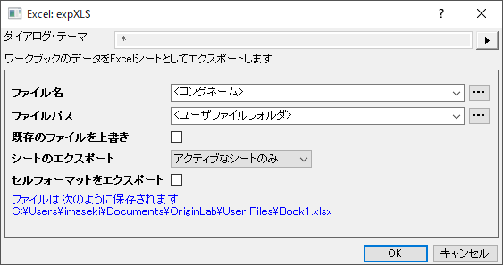
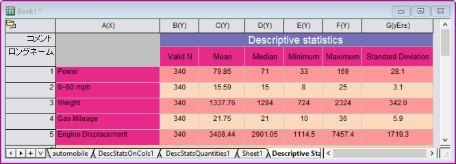
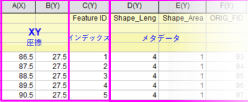
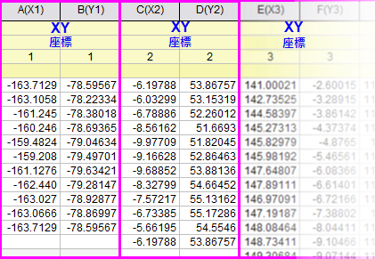

ワークシートと行列のエクスポート
Export-Wks-Mat
Originのワークシートデータは、次の ASCII、Excel、NI TDM (TDM, TDMS), Sound (WAV), ESRI シェープファイル (SHP)形式でエクスポートできます。Originのワークシートデータは、1ページのPDFファイルまたは複数ページのPDFファイル、画像ファイルとしてエクスポートできます。
行列データは、ASCIIと画像としてエクスポートできます。
ワークシートデータをASCIIファイルとしてエクスポート
ASCIIエクスポートは、データのみのワークシートで行うことができます。レポートシート、埋め込みグラフやリンクグラフ(スパークラインを含む)を持つワークシートなど、埋め込まれた情報が含まれる複雑な文書は、ASCIIファイルに完全にエクスポートすることができません。エクスポートするワークシートデータに埋め込みの画像やグラフがある場合、これらの画像やグラフはエクスポート時に無視されます。
ワークシートデータをASCIIファイルとしてエクスポートする
- ワークシートをアクティブにし、Originのメインメニューからファイル：エクスポート: ASCII を選択し、 expASC ダイアログを開きます。
- ダイアログボックスでファイルタイプ、パス、区切り文字、ヘッダなどのオプションを指定し、 OKをクリックします。
ワークシートをASCIIファイルにエクスポートする主なオプション
- DAT, TXT, CSVファイルタイプのサポート。 CSVが選択されている場合、セルの内容を保護するため、必要に応じて引用符が挿入されます。
- 選択したデータのみエクスポート 選択範囲は非連続の場合もあります。
- ユーザ指定のデータセパレータのサポート(CSVファイル形式では利用できません)。
- ヘッダ情報のエクスポートをサポート
- 完全精度の数値と欠損値のサポート
Notes:
- Origin 2018から、デフォルトで非表示ワークシート列はエクスポートされません。非表示列を含めてエクスポートしたい場合、システム変数@UHCの値を変更します。スクリプトウィンドウ（ウィンドウ: スクリプトウィンドウ）を起動し、@UHC = 1; を実行します。これにより、現在のOriginセッション内のエクスポート動作のみが変更されます。Origin開始時にいつもこの設定にするには、FAQ-708: "@"システム変数の値をずっと変更したままにするには?を参照してください。
- Origin 2018bから、ワークシートデータエクスポート時に最後の空の列を除外することができます。これは、オプションの項目にある終了の空の列を無視するにチェックをつけると可能です。そしてエクスポートでは、データのある最後の列以降のすべての列を無視され、メタデータは考慮されず、すべての欠損値を含む列は空とみなされます。
|
 | expASCダイアログのファイルパスドロップダウンには、データエクスポート用の<プロジェクトフォルダ> <PEのパス>オプションがあります。ただし、現在、ダイアログボックスは入力として1つのワークシートのみしか受け取らないため、これにはスクリプトの記述が必要です。
|
ワークシートデータをExcelファイルとしてエクスポート
現在のワークブックまたは特定のワークシートをExcelファイルにエクスポートする場合、次のようにします。アクティブワークブックからファイル：エクスポート：Excelメニューを選択し、オプションダイアログを開くにチェックを入れます。
または
以下のようなexpXLSダイアログが開きます。
- 
- エクスポートされるファイル名は置換表記をサポートしています。ファイル名とファイルパスを
<long name>のようなよく使うファイル名や<Project Folder><PE Path>のようなよく使うファイルパスをドロップダウンリストから選択します。これらはバッチエクスポートで便利です。
- シートのエクスポートを使用して、全てのブックまたはアクティブなシートのみを指定します。
- 全てのブックをエクスポートする場合は、シートタブを右クリックし、Excelエクスポートから除外するを選択して、選択したシートを除外します。解析レポートシートは自動的にスキップされます。
- ワークシートのフォーマットをエクスポートするには、セルフォーマットをエクスポートボックスをオンにします。Originのフォーマット設定のすべてがExcelで認識できるわけではありませんが (有効数字、列指定など)、フォント/フォントサイズ、セルの塗りつぶしの色、10進数などは保持されます。
- 
ワークシートデータをSQLiteファイルとしてエクスポート
ワークブックの1つのシートもしくは全てのシートをSQLiteファイルとしてエクスポートするには
- ワークシートをアクティブにして、ファイル：エクスポート：SQLiteをクリックします。もしくは、スクリプトウィンドウ(ウィンドウ：スクリプトウィンドウ)を開き、以下のように入力してEnterキーを押します。
expSQLite -d
すると、expSQLiteダイアログボックスが開きます。
- ファイル拡張子を選択します。選択したファイルの種類に関係なく、ファイルの構造と内容は同じになることに注意してください。
- ブック内の全てのシートを1つのファイルにエクスポートするには、全てのシートチェックボックスをオンにします。
詳細は、こちらのOriginLabのブログを参照してください。
ワークシートデータをNational Instruments TDMファイルとしてエクスポート
ワークシートデータをNational Instruments TDMファイルとしてエクスポートします。このエクスポートはデータのみのワークシートで行うことができます。
ワークシートデータをNational Instruments TDMファイルとしてエクスポートするには
- ワークシートをアクティブにし、Originのメインメニューからファイル：エクスポート: NI TDM (TDM, TDMS)...を選択し、expNITDM ダイアログを開きます。
- ダイアログでファイル名およびその他のオプションを指定します。OK ボタンをクリックします。
ワークシートデータをMicrosoft PCM waveファイルとしてエクスポート
ワークシートデータをMicrosoft PCM waveファイルとしてエクスポートするには
- ワークシートをアクティブにし、Originのメインメニューからファイル：エクスポート: サウンド (WAV)... を選択し、 expWAV ダイアログを開きます。
- ダイアログでパラメータを指定し、OK ボタンをクリックします。
ワークシートをwaveファイルにエクスポートする主なオプション
- モノラルとステレオの2つのチャンネルモードをサポート
- チャネルモードがステレオの場合、左チャネルと右チャネル
- 部分エクスポート
エクスポートするWAVファイルのサンプリング間隔を指定するには、次の操作を行ってください。
- 目的の列を選択し、右クリックをしてからコンテキストメニューを開きます。
- サンプル間隔を設定を選び、その列に対するサンプル間隔を設定します。
- ワークシートのデータをエクスポートすると、サンプリング間隔がWAVファイルに保存されます。
量子化ビット長を指定するには、次の操作を行います。
- 列を選択して、トップメニューからフォーマット：列フォーマットを選択します。
- オプションブランチを開き、フォーマットを数値にします。
- 以下の表を参考にしながら、目的のbit長さをが当てはまるデータ型を選択します。
| データ型
|
ビット長
|
| Long(4)
|
32-bit
|
| Short(2)
|
16-bit
|
| Byte(1)
|
8-bit
|
ワークシートデータをESRI Shapefile（シェープファイル）としてエクスポート
ワークシートデータをESRI シェープファイルとしてエクスポートするには：
- ワークシートをアクティブにし、Originのメインメニューからファイル：エクスポート: ESRI Shapefile (SHP)... を選択し、 expSHP ダイアログを開きます。
- ダイアログ内でパラメータを指定します。使用できるデータレイアウトは2種類です。
| 単一XY座標
|
3列以上が必要です。最初の2列がXY位置、3番目の列がインデックス（倍精度の場合は整数に変換され、昇順でなければなりません）です。残りの列が存在する場合はメタデータとなります。

|
| 複数XY座標
|
XY座標は複数の列のペアとして置かれます。ワークシート内の列の数が奇数の場合、列の各ペアはXYペアとしてエクスポートされ、最後の列は無視されます。メタデータはラベル行にあります。

|
- OKボタンをクリックします。
ワークシートデータを複数ページのPDFファイルとしてエクスポート
画像や埋込/リンクグラフを含むワークシートをPDFファイルとしてエクスポートすることができます。
|
Note: ワークシートまたは結果シートを1ページまたは複数ページのPDFファイルとしてエクスポートすることもできます。
|
ワークシートを複数ページPDFファイルにエクスポート：
- ワークシートをアクティブにし、Originのメインメニューからファイル：エクスポート：マルチページPDF形式でを選択し、マルチページPDF形式でダイアログを開きます。
- エクスポートするワークシート、ファイル名、パス、その他の設定を指定します。そして、OKボタンをクリックします。
ワークシートを複数ページPDFファイルにエクスポートする主なオプション
- 複数ワークシートのエクスポート各ワークシートは1つのPDFファイルとしてエクスポートされます。
- 色変換、線のモード、塗りつぶしモード、データ圧縮、フォント、カバーページなどユーザ定義のPDF設定のサポート
- グリッド、ヘッダ、フッタ、背景色、枠、余白などのユーザ定義設定のサポート
|
ワークシートデータをイメージファイルとしてエクスポート
Originのレポートシート以外のイメージや埋込/リンクグラフを含むワークシートをイメージファイルとしてエクスポートすることができます。イメージの種類は、AI, BMP, CGM, DXF, EMF, EPS, GIF, JPG, PCX, PDF, PNG, PSD, TGA, TIF, WMFを含みます。
ワークシートをイメージファイルとしてエクスポートするには
- ワークシートをアクティブにし、Originのメインメニューからファイル：エクスポート：イメージファイル形式で... を選択し、expWks ダイアログを開きます。
- エクスポートするワークシート、ファイル名、パス、その他の設定を指定します。そして、OKボタンをクリックします。
ワークシートをイメージファイルにエクスポートする主なオプション
- 複数ワークシートのエクスポート各ワークシートは、1つの画像としてエクスポートされます。
- エクスポート領域、画像サイズなどのエクスポート設定が利用できます。
PDFファイルとしてワークシートをエクスポート
ワークシートをPDFファイルとしてエクスポートするには
- ワークシートをアクティブにし、Originのメインメニューからファイル：エクスポート：イメージファイル形式で... を選択し、expWks ダイアログを開きます。画像の種類 はPortable Document Format (*.pdf)に設定します。
- エクスポートするワークシート、ファイル名、パス、その他の設定を指定します。そして、OKボタンをクリックします。
ワークシートのグラフをグラフエクスポート
ワークシートに含まれるグラフ（フローティング、セル内挿入、シートとして追加されたグラフ）を画像ファイルとしてエクスポートします。
- ファイル：エクスポート：グラフエクスポート.これにより、グラフエクスポートダイアログボックスが開きます。
- グラフを選択または指定を選択してグラフページの右にあるボタンでエクスポートするグラフを選びます。埋め込まれたグラフやシートとして追加されたグラフをエクスポートするには、現フォルダ中の全て（埋め込みを含む）を選択します。
- 必要に応じて出力先などの他のオプションを設定し、OKをクリックします。
ほんの少し注意点があります：
- ワークシートのセルに画像として埋め込まれているグラフ（グラフ上でダブルクリックしても編集することが出来ない画像として挿入されたもの）はエクスポートできません。
- シートとしてワークブックに追加されたグラフのファイル名 はシート名に準じます。ワークシートには ＜ロングネーム＞が設定されて無いかもしれませんのでご注意ください。
行列データをASCIIファイルとしてエクスポート
行列オブジェクトに保存したデータをASCIIファイルとしてエクスポートできます。
行列データをASCIIファイルとしてエクスポートするには
- 行列シートをアクティブにし、Originのメインメニューからファイル：エクスポート: ASCIIを選択し、expMatASC ダイアログを開きます。
- ダイアログボックスでファイルタイプ、パス、区切り文字などのオプションを指定し、 OKをクリックします。
行列データをASCIIファイルにエクスポートする主なオプション
- DAT, TXT, CSVファイルタイプのサポート。CSVが選択されている場合、セルの内容を保護するため、必要に応じて引用符が挿入されます。
- ユーザ指定のデータセパレータのサポート(CSVファイル形式では利用できません)。
- 完全精度の数値、欠損値、XY座標のサポート
行列オブジェクトを画像ファイルとしてエクスポート
どの種類の行列オブジェクトでもイメージファイルとしてエクスポートできます。データタイプは設定により別のデータタイプに変換できます。イメージタイプには、BMP, GIF, JPG, PCX, PNG, PSD, TGA, TIFを含みます。
行列オブジェクトをイメージファイルにエクスポートするには
- 行列シートをアクティブにし、Originのメインメニューからファイル：エクスポート: イメージを選択し、expImage ダイアログを開きます。
- イメージタイプ、名前、DPI解像度、色深度などを指定します。OKボタンをクリックします。
| Origin2024からは、行列ウィンドウを画像としてエクスポートするときに、グラフオブジェクトを含めることがサポートされます。
システム変数@UPMでこのオプションを制御できます。
@UPM=1; //グラフオブジェクトを含む行列をエクスポートする
@UPM=0; //グラフオブジェクトを含まず行列をエクスポートする
|